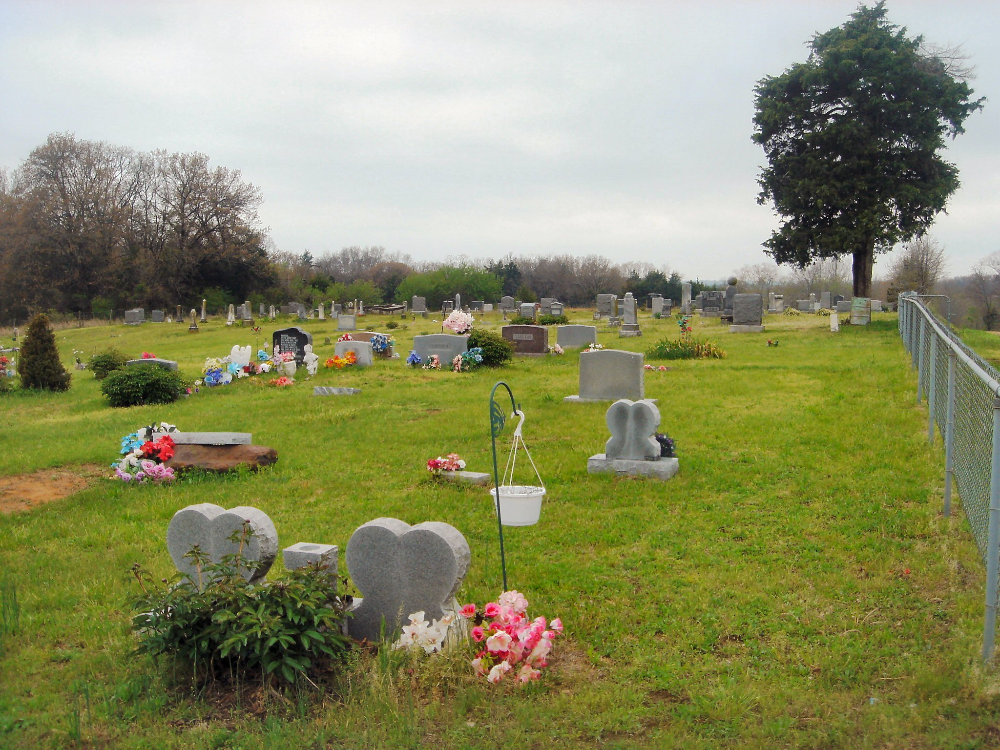

Lois Cutler's Gravestone |
Our first stop was at Detroit Lakes, Becker County in Minnesota. My gg-grandfather Buckley B. Anderson and his wife Sally and six of their children moved to Audubon Township in 1869. Buckley’s son-in-law Jackson Burdick and his family, as well as his mother-in-law Lois Cutler moved here with them. Buckley had purchased 160 acres of Public Land in Sections 17 and 20 in Township 139-N Range 42-W which was eventually registered March 15th, 1876. We visited the Historical Society where we obtained a recent plat map for Audubon Township, as well as cemetery records for the county. We then visited the Becker County Recorder Office where we obtained copies of the following documents:
- Mortgage that Buckley & Sally Anderson took out on their land with the New England Mortgage Security Company for a sum of $700.00 on August 28, 1875;
- Certificate of the Register of Detroit, Minnesota for the purchase of public lands dated March 15, 1876;
- Release of above mortgage dated 7 February 1877;
- Mortgage that Buckley & Sally Anderson took out with the New England Mortgage Security Company for a sum of $660.00 on 155 acres of their land on July 1, 1876;
- Warranty Deed where Buckley & Sally Anderson sold to the Oakwood Cemetery Association for the sum of $40.00 four acres of their land located in Section 17 on October 26, 1977;
- Release of above mortgage dated July 11, 1881;
- Indenture wherein Buckley & Sally Anderson sold for the sum of $300.00 plus $660.00 owing on the mortgage their 156 acres on April 21, 1881;
- Deed filed by Buckley Anderson, who was appointed Administrator of Lois Cutler’s estate on July 1, 1882, where he sold for the sum of $841.40 her 120 acres plus a lot located in Section 18 Township 139-N Range 41-W on July 19, 1882.
Old Clitherall Plaque |
We then visited Sections 17 & 20 in Audubon Township, Becker County where Buckley B Anderson and family lived until 1881. We visited the Oakwood Cemetery and found the gravestone of my ggg-grandmother Lois Cutler who had died March 23, 1878 in Oak Lake, Minnesota. We also visited the Audubon First Lutheran Cemetery looking for the grave of my ggg-grandmother Lydia Anderson who had died May 27, 1876. We had information that her death had occurred in Audubon, Becker County.
Our First stop on the next day was at the Mount Pleasant Cemetery close to Clitherall, Otter Tail County, Minnesota. We found the gravestones for my three ancestors who were buried there, namely:
- My ggg-grandmother Mary (Baker) Burdick, who died March 24th, 1872;
- My gg-grandfather Francis Lewis Whiting, who died April 10th, 1911;
- My gg-grandmother Ann Janette (Burdick) Whiting, who died January 21st, 1917.
Old Clitherall Church |
Our next stop was at Old Town Clitherall, where my grandfather Victor Rozelle Anderson was born July 16th, 1876. His parents were Edwin Buckley Anderson and Emma Lucine (Whiting) Anderson, who were married here April 5th, 1870. It appears that the original buildings no longer exist. The exception is an old vacant building which looks like it could have been the village general store. The LDS church looks in good shape, but doesn’t appear to be the original church, as it was built around 1911. In 1884, my gg-grandfather Francis Lewis Whiting had a residence in Old Clitherall. He also had a 160 acre homestead in the nearby township of Girard, which he finally gained title to March 24th, 1888.
Our next stop was on the north side of East Battle Lake, where my g-grandfather Edwin Anderson had homesteaded 160 acres beginning in 1878, gaining title May 4th, 1885. Edwin’s homestead included about one half mile of lake front land, which is now heavily populated with cottages and homes.
Our last stop in Otter Tail County was further north in Girard Township where my gg-grandfather Buckley B Anderson homesteaded 160 acres in 1881, and gained title April 6th, 1888. Buckley’s son Myron homesteaded 136 acres on the same Section at the same time. All of Buckley’s living sons were farmers in Girard Township in 1884.
 Nauvoo Temple |
After arriving in Nauvoo, we visited the Church of Jesus Christ of Latter Day Saints Visitors’ Centre where we viewed a 20 minute film "Remembering Nauvoo" which depicted the timeframe between 1839 and 1846 when Nauvoo was home to the Church.
We later visited the site of the new Nauvoo Temple completed in 2002, which replaced the original Temple destroyed in 1848. We were disappointed that we had missed the open house back in 2002, as the Temple is apparently no longer open to the public. So we took our photos of the outside, and moved onto the Joseph and Hyrum Smith Memorial across from the Temple which depicts the brothers beginning the fateful journey from Nauvoo to Carthage to answer charges against them for causing a riot. Three days later, they were killed while awaiting trial in the Carthage Jail.
The next day, we first re-visited the Visitors’ Center to view a 68 minute film "Joseph Smith, The Prophet of the Restoration", which depicted the life of Joseph Smith, Jr.
Joseph and Hyrum Smith Memorial |
We next visited the Land and Records Office, which has records on the locations of the homes and property of those who resided in Nauvoo from 1839 to 1846, including records on many of the early members of The Church of Jesus Christ of Latter-day Saints. So we enquired about some of my ancestors, which we searched for on their computer. We found information files on two of my gg-grandparents as well as all of my Anderson ggg-grandparents, and some of their ancestors for a total of sixteen files. All of these files were burned onto a CD-ROM for our later research.
We then drove to Carthage, Illinois and visited the Carthage Jail and the Visitors’ Center where Joseph Smith and his brother Hyrum were killed on June 27th, 1844.
We then visited the Hancock County Recorder Office to research their records for my ancestors who resided in the county between 1839 and 1846. All of the documents that we found related to land transactions involving Alpheus Cutler and sometimes his wife Lois Cutler. These land transactions involve farmland located in Section 20 of Sonora Township and three lots in the City of Nauvoo:
- On February 6th, 1841, Alpheus Cutler purchased for the sum of $400.00 an undivided half of NW quarter of Section 20 of Township 6 North of Range 8 West of the 4th Principle Median containing 160 acres;
- On May 24th, 1841, Alpheus Cutler sold for the sum of $150.00 the West half of the NW quarter of NW quarter of Section 20 of Township 6 North of Range 8 West of the 4th Principle Median, containing 20 acres;
- On September 17th, 1841, Alpheus Cutler sold for the sum of $200.00 the South half of NW quarter of Section 20 of Township 6 North of Range 8 West of the 4th Principle Median containing 80 acres;
- On July 31st, 1845, Alpheus Cutler purchased for $150.00 Lot Two in Block Three in Worthington’s addition to the City of Nauvoo containing just under one-third acre;
- On March 21st, 1846, Alpheus and Lois Cutler sold for $400.00 their remaining 60 acres on the east end of the North half of NW quarter of Section 20 of Township 6 North of Range 8 West of the 4th Principle Median;
- On May 11th, 1846, Alpheus and Lois Cutler sold for $200.00 the front of lot twelve in block three in Kimball’s addition to Nauvoo containing just over one-third acre;
- On September 7th, 1846, Alpheus Cutler purchased for $50.00 the east part of lot four in block twenty-two of Kimball’s addition to Nauvoo containing one-fourth acre;
- On September 17th, 1846, Alpheus and Lois Cutler sold for $175.00 the east part of lot four in block twenty-two of Kimball’s addition to Nauvoo containing one-fourth acre also lot two in block three in Worthington’s addition to the City of Nauvoo containing just less than one-third acre.
Joseph and Hyrum Smith at Carthage Jail |
Garden Grove Iowa |
The first part of the Mormon Trail crosses southern Iowa from Montrose (across the Mississippi River from Nauvoo) to Council Bluffs on the east side of the Missouri River across from Omaha. As you travel the designated highways and roads, there are markers every so often that indicate that you are either traveling along the actual Mormon Trail or more often that the actual Mormon Trail crosses the highway.
While there are several Pioneer Trail historical sites across Iowa, we decided to stop at the two semi-permanent camps that were built for the benefit of those who would follow as well as visiting the locations in western Iowa where my ancestor lived between 1846 and 1864.
Our first stop was at Garden Grove Trailside Historic Site, which is about a mile west of town. There is a large marker which commemorates the Pioneers who spent time at Garden Grove as well as those who died there and are buried in that park. The marker does not name any of those that died there, and I don’t believe that any of my ancestors actually died there. There are two wayside exhibits which describe the founding and development of the site. We walked along the trail as far as we could. There are markers which show where some of the cabins were, as well as a graveyard.
Mount Pisgah Monument Deaths (1846-1848) |
Later we stopped at Mount Pisgah Historic Site. There is a monument there which lists some of the Pioneers who died and were buried there. After reviewing the names, I found two of my ancestors listed there. Dates of death were not indicated, but presumably all of those listed were buried there before the camp was vacated in 1852. The site also has a log cabin and a wayside exhibit. Since the actual camp was much larger than the present site, we had made arrangements with the farmer who owns the land for a very interesting tour. Using divining, he could show us exactly where the cabins and dugouts had been built. In addition, he could show us the location of one of the graveyards as well as where the trail ruts were from the wagons.
Since my great-grandmother had been born at Silver Creek, Iowa, we wanted to find its location. A map of western Iowa showing the location of various camps suggested that Silver Creek was located in south-central Pottawattamie County about two or three miles north of Mills County. We were able to find two of the legs of the actual creek, but did not find where they met. We later found another map which showed the location of Silver Creek camp between the junction of the two legs of the creek and the county line. We were later reminded by my great-grandmother’s memoirs that she was actually born in Mills County, presumably just south of the county line.
We visited Fremont County Recorder Office to research their records for my ancestors who resided in Manti, Fremont County between 1852 and 1865. We found the following documents:
- On September 17th, 1855, Alpheus and Lois Cutler sold to their son Thaddeus and another person for $100.00 the South half of SW quarter of Section 36 Township 69N of Range 40W containing 80 acres;
- On January 6th, 1857, Francis Lewis Whiting purchased for $10.00 one acre in the South-East corner of the NE quarter of the SE quarter of Section 35 Township 69N of Range 40W;
- On March 28th, 1957, Francis Lewis Whiting purchased for $100.00 the West half of SW quarter of SE quarter of Section 35 Township 69N of Range 40W containing 20 acres;
- On January 6th, 1863, Alpheus and Lois Cutler sold for $20.00 their half acre lot located in Manti;
- On September 20th, 1864, Francis Lewis and Janette Whiting sold for $500.00 the West half of SW quarter of SE quarter and NW quarter of SE quarter of Section 35 Township 69N of Range 40W containing 60 acres;
- On September 27th, 1864, Francis L and Ann Janette Whiting sold for $100.00 one acre in the South-East corner of the NE quarter of the SE quarter of Section 35 Township 69N of Range 40W.
Alpheus Cutler Gravestone, Manti Cemetery |
Manti Iowa Historic Marker |
We next visited Fisher Township to find the location of Manti, Iowa. Once we found Manti Road, we traveled east until the road turned north, where we found Manti Park and Cemetery. While none of the original buildings still exist, there was a sign that indicated the location of the Manti School 1853-1946. We walked through the park about a mile to the Manti Cemetery, where we found several gravestones. One of the gravestones was that of Alpheus Cutler, my ggg-grandfather who had died there August 10th, 1864.
Finally, we visited the Kanesville Tabernacle in Council Bluffs, which is a replica of the log tabernacle built in 1847 that would accommodate about 1,000 people in order to present the new First Presidency to the general Church membership.
Far West Missouri Historic Map |
Our first stop was at the Adam-Ondi-Ahman Historic Site in Daviess County along the east bluffs above the Grand River. It was selected in May 1838 as a settlement site, but it lasted only about a year before the Saints were evicted to Illinois.
We next visited the Caldwell County Recorder Office. We enquired about County documents from the 1830s, but were informed that all the documents from that period were destroyed in a fire in the 1850s. We asked about old maps, but all that was found was an old plat book. We had a look at the plat for Mirabel Township 56N Range 29W of the 5th Prime Meridian. We obtained a copy as many of the dates shown were from the 1830s, including a date of June 22, 1836 for Joseph Smith Jr.
We next visited the Far West Historical Site in Mirabel Township. Far West dates back to 1836 just before Caldwell County was created. It became the headquarters for the Mormon Church in early 1838. However, that was short-lived as Far West was vacated later that year. The historic site includes the cornerstones of the planned temple as well as a monument.
 Liberty Jail Historic Site Gold Plates Display |
We next visited the Clay County Recorder Office. We were interested in any documents from the 1830s, and only found one document stating that on October 25th, 1836, John and Lydia Anderson sold for $220.00 their 60 acres in the East Half of NW quarter of section 28 of Township 52N of Range 30W.
We then visited the Liberty Jail Historic Site where Joseph Smith, Jr. and other associates were imprisoned from November 20, 1838 to April 9, 1839 during the Mormon War. The jail has been reconstructed and is housed at its original location within a museum. The museum includes exhibits, artwork, the original key to the jail, and an audiovisual presentation to help understand more about what the prisoners experienced. The Liberty Jail has been rebuilt in a cutaway style, which helps you visualize the prisoners’ cramped and gloomy quarters.
We next visited the Ray County Recorder Office, enquiring about documents for the 1830s. We found the following two documents:
- On April 26th, 1837, Alpheus Cutler purchased for $50.00 SE quarter of SW quarter of Section 5 of Township 51 of Range 26 containing 40 acres;
- Marriage of Buckley B Anderson of Caldwell County to Sally M Cutler of Ray County by Almon W Sherman, Elder of the Church of Latter-Day Saints on December 31st, 1837.
Lebeck Missouri |
|  Lebeck Cemetery Probable Burial of Buckley & Sally Anderson |
We then visited the Jackson County Recorder Office looking for documents relating to my ancestors, but none were found.
We next visited the Independence LDS Visitor’s Center located at Temple Lot, which depicts the experiences of Mormon settlers in Missouri. This newly remodeled center honors the past and the present, with exhibits depicting experiences of Mormon settlers in Missouri between 1831 and 1839, as well as exhibits on the importance of families, messages from modern prophets, and the Book of Mormon.
We wanted to take a photograph of the Community of Christ Temple across the street, but it was raining when we departed from the Visitors’ Center. We would have been interested in a tour of the Temple, but we weren’t able to return to the site. Maybe next time.
The next day we visited the Platte County Recorder Office looking for documents relating to Buckley B Anderson, but none were found.
Cedar County, Missouri South-west corner of Edwin Anderson's Farmland |
We drove to Cedar County in search of the village of Lebeck. We had a map which showed its location, but we went right by the village as signage is not posted. Once we arrived at the county line, we realized that we had missed its location, so we measured the half mile distance to locate the few homes which is Lebeck today. We found the cemetery, and looked for gravestones for my gg-grandparents Buckley B and Sally M Anderson, which we didn’t find there. We still think that they were likely buried there without gravestones.
We next visited the Cedar County Recorder Office. We had previously obtained a copy of two documents relating to farmland owned by Edwin B Anderson near Lebeck. We found two additional documents as follows:
- On March 19th, 1889, Buckley B Anderson purchased for $250.00 Lots 3, 4, 8, 9 and 10 in block one in the town of Lebeck;
- On January 20th, 1892, Buckley B Anderson sold to his son Myron M Anderson for $200.00 Lots 3, 4, 8, 9 and 10 in block one in the town of Lebeck.
We retuned to Lebeck and found the location of Edwin B Anderson’s 40 acre farmland at the SW quarter of SW quarter of Section 16 of Township 36N of Range 27W.
Culter's Park Plaque Omaha, Nebraska |
We headed west from Council Bluffs, but first we visited the Mormon Trail Center in historic Winter Quarters at Florence, Nebraska. It has a large museum with interpretive exhibits on the history of the entire trail. Across the street, is the Winter Quarters Cemetery Historic Site where many of the Mormons who died between 1846 and 1852 are buried.
We next visited Cutler’s Park Historic Park, the site that Alpheus Cutler chose as the Mormon’s headquarters in 1846. Cutler's Park is known today as Nebraska’s First City, even though it was soon replaced by Winter Quarters.
Ayres Natural Bridge Park |
The route west generally follows the Platte River upstream to the North Platte River and then the Sweetwater River through Nebraska and Wyoming. For most of the way, it follows the same route as was taken by other pioneer groups. As we headed west, we frequently noticed road signs that related to the Oregon Trail (1836-1869), the California Trail (1841-1869), as well as the Pony Express Trail (1860-1861). We specifically followed the Mormon Trail road signs all the way to Salt Lake City. We stopped at most of the frequent markers along the way and took photographs of those relating to the Mormon Trail.
Our first stop was at Genoa, Nebraska which was established as a temporary settlement in 1857 by the Mormons as a way station for the mail and a rest and supply stop for the Mormons traveling to the Utah territory. Genoa was abandoned by the Mormons in 1859 when it became part of an Indian Reservation.
Casper, Wyoming Mormon Ferry |
We stopped at Ayres Natural Bridge Park in Wyoming, which is a natural bridge with water running underneath. Although it is located off the Mormon Trail, many of the Mormons visited this location as it is an oasis in the middle of a desert.
We visited the Mormon Ferry Site in Casper, Wyoming located at the rebuilt old Fort Casper. Established in 1847, this was the first commercial ferry on the North Platte River. The site has a full sized replica of the original Mormon ferry.
Independence Rock, Wyoming |
We next visited Independence Rock, which is a famous landmark for all the trails. It was named by pioneers, who had departed the Missouri River in the spring and would arrive here around July 4th on their way west to Oregon and California.
Our next stop was near Martin’s Cove at the Mormon Handcart Visitors’ Centre, which has interpretive exhibits about the Willie and Martin handcart companies. The cove is where Martin Company took shelter when they were snowed in during a blizzard in November of 1856.
Green River, Wyoming Mormon Ferry |
We next crossed the continental divide through South Pass. We visited South Pass City , Wyoming’s only restored gold-mining town which is located in a small valley along the banks of Willow Creek on the southeastern end of the Wind River Mountains. We also visited South Pass Historic Site.
Our next stop was at Green River Mormon Ferry Site, also known as Lombard Ferry. The ferry was established in 1847 to help subsequent Mormons and as a commercial venture. The site has an interpretive exhibit and a replica of the ferry.
Our next stop was at Fort Bridger, the second most important fort on the Mormon Trail. A smaller version of the fort has been re-built. As well, the Mormons have rebuilt a small section of the cobblestone wall.
We next stopped at the Echo Canyon Historic Marker. The Echo Canyon Breastworks were constructed at the time of the Utah War (1857-1858) high up on the north wall at the narrowest point of Echo Canyon as a defensive measure. However, these fortifications were not needed as the dispute was peacefully resolved.
Big Mountain, Utah Plaque |
Our last stop before we arrived in Salt Lake City was at Big Mountain Historic Site. The Mormons went to Mormon Flat where they turned up Little Emigration Canyon. Here they prepared for the 4.2 mile climb up Little Emigration Canyon, the longest sustained climb of the entire trail. They reached Pratt's Pass on the shoulder of Big Mountain, the highest mountain crossed on their entire trip.
We finally arrived in Salt Lake City. Once we were settled, we visited the Family History Library, which was very interesting. There were five floors of genealogical source documentation which included books, microfilm, maps, family history documents and computers. The top two floors were for North America, the main floor was family books, with the 1st basement for non-English speaking ancestors, and the 2nd basement for English speaking ancestors. We found the following documents of interest:
- An entire book entitled “Alpheus Cutler (1784-1864)”;
- Map of the State of Missouri dated 1831;
- Map of “Zion’s Camp Trail, 1834 Missouri, Part 2”;
- Map entitled “Mormon Camps of 1848 Identified in Pottawattamie County, Iowa”;
- Map of “Mormon Pioneer Trail, 1846 Iowa, Parts 1 & 2”;
- Map of “Handcart Trail, 1956-57 Iowa, Parts 1 & 2”.
Salt Lake City, Utah Mormon Temple |
We also visited Temple Square. After stopping by the Visitors’ Centre, we visited Assembly Hall on the southwest corner of Temple Square, a Gothic-style building with stained-glass windows constructed by Latter-day Saint pioneers in 1877. We nex t visited the Tabernacle, which was completed in 1875 and is the home of the Mormon Tabernacle Choir. The acoustics within the Tabernacle were very impressive, as we could hear a pin dropped at the pulpit clearly at the back of the hall. We walked around Temple Square viewing the various memorials, as well as looking for the best angle to photograph the Temple.
We attended the Mormon Tabernacle Choir rehearsal that evening at the Conference Center. The auditorium was very impressive, and although the acoustics do not match those of The Tabernacle, we could clearly hear what the conductor was saying to the Orchestra and the Choir. And of course, the music was wonderful.
We headed north back to Canada, before we turned east towards Winnipeg. Although the return trip took four days to complete, we had the pleasure of visiting family in Taber, Alberta along the way.